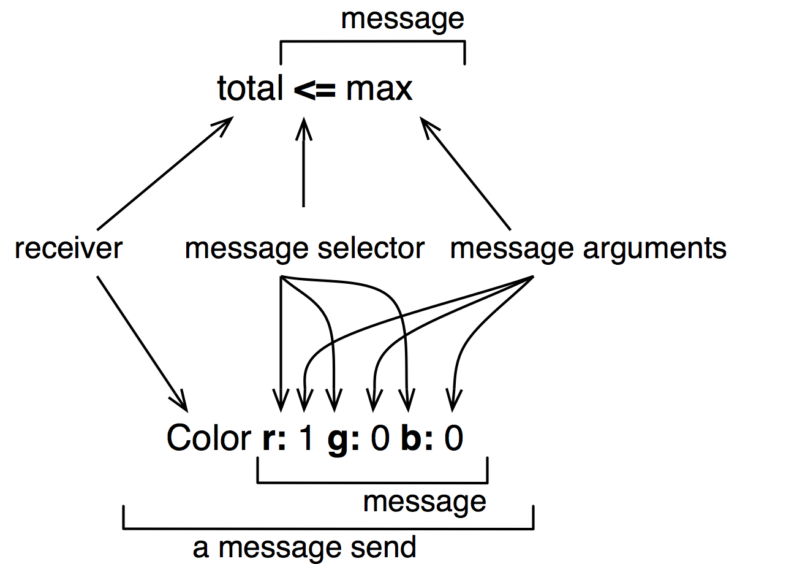
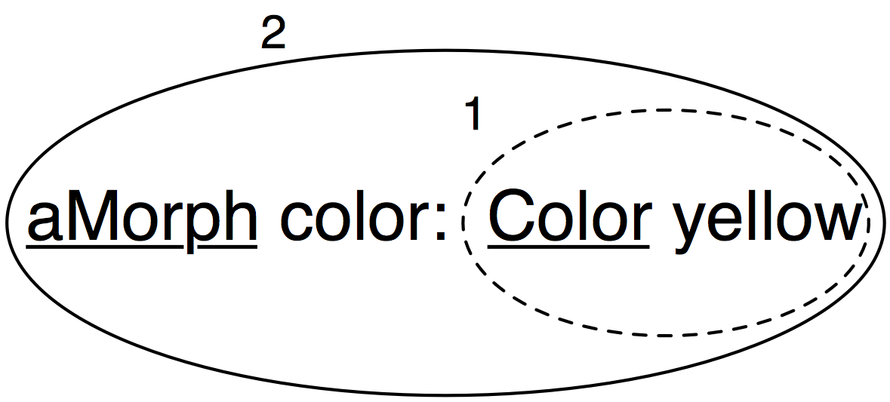
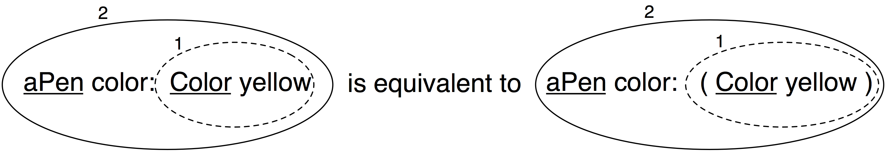
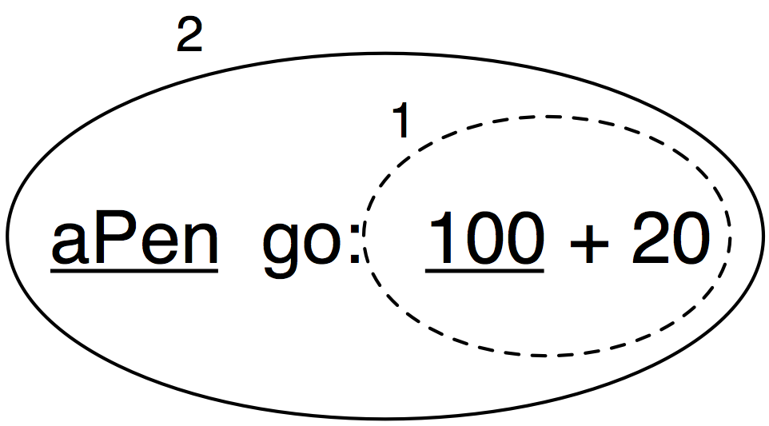
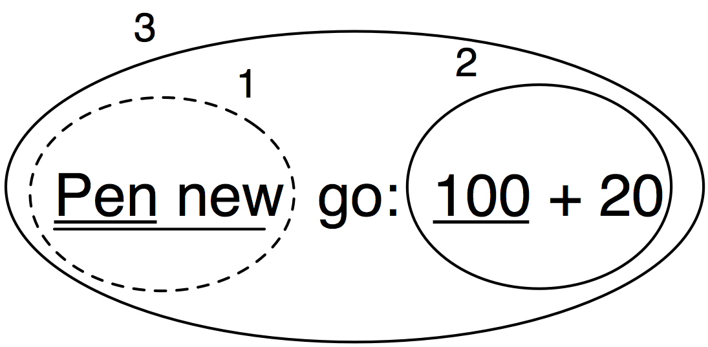
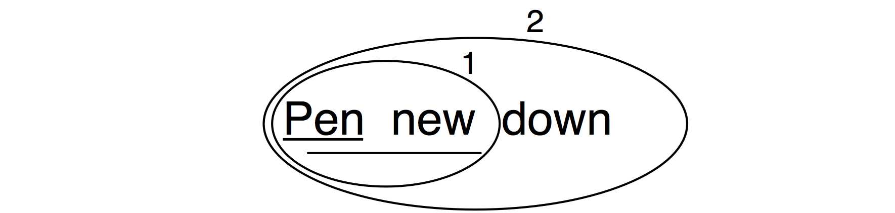
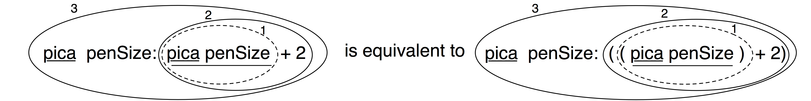
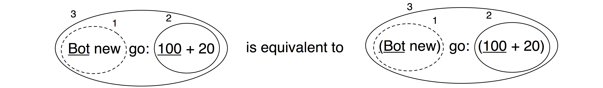

9 Understanding message syntax
Although Pharo's message syntax is extremely simple, it is unconventional and can take some time getting used to. This chapter offers some guidance to help you get acclimatized to the syntax for sending messages. If you already feel comfortable with the syntax, you may choose to skip this chapter, or come back to it later. The Pharo's syntax is closed to the one of Smalltalk, so Smalltalk programmers can be familiar with Pharo's syntax.
9.1 Identifying messages
In Pharo, except for the syntactic elements listed in Chapter 8 (:= ^ . ; # () {} [ : | ]), everything is a message send.
You can define operators like + for your own classes, but all operators, existing and defined ones, have the same precedence.
In fact, in Pharo there is no operators! Just messages of a given kind: unary, binary or keywords.
Moreover, you cannot change the arity of a message selector. The selector "-" is always the selector of a binary message; there is no way to have a unary - for unary messages.
In Pharo, the order in which messages are sent is determined by the kind of message. There are just three kinds of messages: unary, binary, and keyword messages. Unary messages are always sent first, then binary messages and finally keyword ones. As in most languages, parentheses are used to change the execution order. These rules make Pharo code as easy to read as possible. And most of the time you do not have to think about the rules.
As most computation in Pharo is done by message passing, correctly identifying messages is crucial. The following terminology will help us:
- A message is composed of a message selector and optional message arguments.
- A message is sent to a receiver.
- The combination of a message and its receiver is called a message send as shown in Figure 9.1.

A message is always sent to a receiver, which can be a single literal, a block or a variable or the result of evaluating another message. To help you identify the receiver of a message, we will underline it for you. We will also surround each message send with an ellipse and number message sends starting from the first one that will be sent to help you see the order in which messages are sent.
Color yellow and aMorph color: Color yellow.
Figure 9.2 represents two message sends, Color yellow and aMorph color: Color yellow, hence there are two ellipses. The message send Color yellow is executed first so its ellipse is numbered 1. There are two receivers: aMorph which receives the message color: ... and Color which receives the message yellow. Both receivers are underlined.
A receiver can be the first element of a message send, such as 100 in the message send 100 + 200 or Color in the message send Color yellow. However, a receiver can also be the result of other messages. For example in the expression Pen new go: 100, the receiver of the message go: 100 is the object returned by the message send Pen new. In all the cases, a message is sent to an object called the receiver which may be the result of another message send.
| Message send | Message type | Result |
|---|---|---|
Color yellow | unary | Creates color yellow |
aPen go: 100 | keyword | The pen moves forward |
| 100 pixels | ||
100 + 20 | binary | We get 120 |
Browser open | unary | Opens a new browser |
Pen new go: 100 | unary and | Creates and moves a pen |
| keyword | 100 pixels forward | |
aPen go: 100 + 20 | keyword and | The pen moves forward |
| binary | 120 pixels |
The table shows several examples of message sends. You should note that:
- Not all message sends have arguments. Unary messages like
opendo not have arguments. - Single keyword and binary messages, like
go: 100and+ 20, have one argument. - There are also simple messages and composed ones.
Color yellowand100 + 20are simple: a message is sent to an object, while the message sendaPen go: 100 + 20is composed of two messages:+ 20is sent to100andgo:is sent toaPenwith the argument being the result of the first message. - A receiver can be an expression (such as an assignment, a message send or a literal) which returns an object. In
Pen new go: 100, the messagego: 100is sent to the object that results from the execution of the message sendPen new.
9.2 Three kinds of messages
Pharo defines a few simple rules to determine the order in which the messages are sent. These rules are based on the distinction between 3 different kinds of messages:
- Unary messages are messages that are sent to an object without any other information. For example in
3 factorial,factorialis a unary message. A sent unary message may execute a basic unary operation or an arbitrary functionality, but it is always sent without arguments. - Binary messages are messages consisting of operators (often arithmetic) and executing basic binary operations. They are binary because they always involve only two objects: the receiver and the argument object. For example in
10 + 20,+is a binary message sent to the receiver10with argument20. - Keyword messages are messages consisting of one or more keywords, each ending with a colon (
:) and taking an argument. For example inanArray at: 1 put: 10, the message selector isat:put:. The keywordat:takes the argument1and the keywordput:takes the argument10.
It is important to note that:
- There are no keyword messages that are sent without arguments. All messages that are sent without arguments are unary ones.
- There is a difference between keyword messages that are sent with exactly one argument and binary ones - Basically a keyword message contains a colon to identify each of its arguments.
Unary messages
Unary messages are messages that do not require any argument.
They follow the syntactic template: receiver messageName.
The selector is simply made up of a succession of characters not containing a colon (:) e.g., factorial, open, class.
89 sin
>>> 0.8600694058124533 sqrt
>>> 1.732050807568877Float pi
>>> 3.141592653589793'blop' size
>>> 4true not
>>> falseObject class
>>> Object class "The class of Object is Object class (BANG)"Unary messages follow the syntactic template: receiver selector
Binary messages
Binary messages are messages that require exactly one argument and whose selector consists of a sequence of one or more characters from the set: +, -, *, /, &, =, >, |, <, ~, and @.
Note that -- is not allowed for parsing reasons.
100@100
>>> 100@100 "creates a Point object"3 + 4
>>> 710 - 1
>>> 94 <= 3
>>> false(4/3) * 3 == 4
>>> true "equality is just a binary message, and Fractions are exact"(3/4) == (3/4)
>>> false "two equal Fractions are not the same object"Binary messages follow the syntactic template: receiver selector argument
Keyword messages
Keyword messages are messages that require one or more arguments and whose selector consists of one or more keywords each ending in a colon (:).
In the following example, message between:and: is composed of two keywords: between: and and:. The full message selector is between:and: and it is sent to numbers.
2 between: 0 and: 10
>>> trueEach keyword takes an argument. Hence r:g:b: is a message with three arguments, playFileNamed: and at: are messages with one argument, and at:put: is a message with two arguments. To create an instance of the class Color one can use the message r:g:b: as in Color r: 1 g: 0 b: 0, which creates the color red. Note that the colons are part of the selector.
Color r: 1 g: 0 b: 0
>>> Color red "creates a new color"In a Java like syntax, the Pharo message send Color r: 1 g: 0 b: 0 would correspond to a method invocation written as Color.rgb(1,0,0).
1 to: 10
>>> (1 to: 10) "creates an interval"| nums |
nums := Array newFrom: (1 to: 5).
nums at: 1 put: 6.
nums
>>> #(6 2 3 4 5)Keyword messages follow the syntactic template: receiver selectorWordOne: argumentOne wordTwo: argumentTwo ... wordN: argumentN
9.3 Message composition
The three kinds of messages each have different precedence, which allows them to be composed in an elegant way.
- Unary messages are always sent first, then binary messages and finally keyword messages.
- Messages in parentheses are sent prior to any kind of messages.
- Messages of the same kind are evaluated from left to right.
These rules lead to a very natural reading order.
Now if you want to be sure that your messages are sent in the order that you want you can always put more parentheses as shown in Figure 9.3.
In this figure, the message yellow is an unary message and the message color: a keyword message, therefore the message send Color yellow is sent first.
However as message sends in parentheses are sent first, putting (unnecessary) parentheses around Color yellow just emphasizes that it will be sent first.
The rest of the section illustrates each of these points.

Unary > Binary > Keywords
Unary messages are sent first, then binary messages, and finally keyword messages. We also say that unary messages have a higher priority over the other kinds of messages.
Unary > Binary > KeywordAs these examples show, Pharo's syntax rules generally ensure that message sends can be read in a natural way:
1000 factorial / 999 factorial
>>> 10002 raisedTo: 1 + 3 factorial
>>> 128Unfortunately the rules are a bit too simplistic for arithmetic message sends, so you need to introduce parentheses whenever you want to impose a priority over binary operators:
1 + 2 * 3
>>> 91 + (2 * 3)
>>> 7We will dedicate a section to arithmetic inconsistencies.
Example
The following example, which is a bit more complex (!), offers a nice illustration that even complicated expressions can be read in a natural way:
Boolean methodDict keys
select: [:aMethod | (aClass>>aMethod) isAbstract ]
>>> #(#or: #| #and: #& #ifTrue: #ifTrue:ifFalse: #ifFalse: #not #ifFalse:ifTrue:)Here we want to know which methods of the Boolean class are abstract.
We ask the class Boolean for the keys of its method dictionary and select those methods of that class that are abstract.
We need parentheses only to send the binary message >>, which selects a method from a class, before sending the unary message isAbstract to that method.
The message >> sent to a class gives access to the corresponding method in the class.
The result shows us which methods must be implemented by Boolean's concrete subclasses True and False.
In fact, we could also have written the equivalent but simpler expression: Boolean methodDict select: [:each | each isAbstract] thenCollect: [:each | each selector].
Example.
In the message aPen color: Color yellow, there is one unary message yellow sent to the class Color and a keyword message color: sent to aPen.
Unary messages are sent first so the message send Color yellow is sent (1).
This returns a color object which is passed as argument of the message aPen color: aColor (2).
Figure 9.3 shows graphically how messages are sent.
"Decomposing the execution of aPen color: Color yellow"
aPen color: Color yellow
(1) Color yellow "unary message is sent first"
>>> aColor
(2) aPen color: aColor "keyword message is sent next"Example.
In the message aPen go: 100 + 20, there is a binary message + 20 and a keyword message go: (See Figure 9.4). Binary messages are sent prior to keyword messages so 100 + 20 is sent first (1): the message + 20 is sent to the object 100 and returns the number 120. Then the message aPen go: 120 is sent with 120 as argument (2). The following example shows how the message send is executed.
"Decomposing aPen go: 100 + 20"
aPen go: 100 + 20
(1) 100 + 20 "binary message first"
>>> 120
(2) aPen go: 120 "then keyword message"

Example.
As an exercise we let you decompose the execution of the message send Pen new go: 100 + 20 which is composed of one unary, one keyword and one binary message (see Figure 9.5).
Parentheses first
Messages within parentheses are sent prior to other messages.
(Msg) > Unary > Binary > Keyword
Here are some examples.
The first example shows that parentheses are not needed when the order is the one we want, i.e. that result is the same if we write this with or without parentheses. Here we compute tangent of 1.5, then we round it and convert it as a string.
1.5 tan rounded asString = (((1.5 tan) rounded) asString)
>>> trueThe second example shows that factorial is executed prior to the sum and if we want to first perform the sum of 3 and 4 we should use parentheses as shown below.
3 + 4 factorial
>>> 27 "(not 5040)"(3 + 4) factorial
>>> 5040Similarly in the following example, we need the parentheses to force sending lowMajorScaleOn: before play.
(FMSound lowMajorScaleOn: FMSound clarinet) play
"(1) send the message clarinet to the FMSound class to create a clarinet sound.
(2) send this sound to FMSound as argument to the lowMajorScaleOn: keyword message.
(3) play the resulting sound."Example.
The message send (65@325 extent: 134@100) center returns the center of a rectangle whose top left point is (65, 325) and whose size is 134*100.
The following example shows how the message is decomposed and sent.
First the message between parentheses is sent: it contains two binary messages 65@325 and 134@100 that are sent first and return points, and a keyword message extent: which is then sent and returns a rectangle.
Finally the unary message center is sent to the rectangle and a point is returned. Evaluating the message without parentheses would lead to an error because the object 100 does not understand the message center.
Example of Parentheses.
(65@325 extent: 134@100) center
(1) 65@325 "binary"
>>> aPoint
(2) 134@100 "binary"
>>> anotherPoint
(3) aPoint extent: anotherPoint "keyword"
>>> aRectangle
(4) aRectangle center "unary"
>>> 132@375From left to right
Now we know how messages of different kinds or priorities are handled.
The final question to be addressed is how messages with the same priority are sent.
They are sent from the left to the right.
Note that you already saw this behaviour in the example 1.5 tan rounded asString where all unary messages are sent from left to right which is equivalent to (((1.5 tan) rounded) asString).
When the messages are of the same kind, the order of execution is from left to right.
Example.
In the message sends Pen new down all messages are unary messages, so the leftmost one, Pen new, is sent first.
This returns a newly created pen to which the second message down is sent, as shown in Figure 9.6.
Pen new down.
9.4 Arithmetic inconsistencies
The message composition rules are simple. There is no notion of mathematical precedence because arithmetic messages are just messages as any other ones. So their result may look in inconsistent when executed them. Here we see the common situations where extra parentheses are needed.
3 + 4 * 5
>>> 35 "(not 23) Binary messages sent from left to right"3 + (4 * 5)
>>> 231 + 1/3
>>> (2/3) "and not 4/3"1 + (1/3)
>>> (4/3)1/3 + 2/3
>>> (7/9) "and not 1"(1/3) + (2/3)
>>> 1Example.
In the message sends 20 + 2 * 5, there are only binary messages + and * (see Figure 9.7).
However in Pharo there is no specific priority for the operations + and *.
They are just binary messages, hence * does not have priority over +. Here the leftmost message + is sent first (1) and then the * is sent to the result as shown in below.
"As there is no priority among binary messages, the leftmost message + is evaluated first even if by the rules of arithmetic the * should be sent first."
20 + 2 * 5
(1) 20 + 2 >>> 22
(2) 22 * 5 >>> 110As shown in the previous example the result of this message send is not 30 but 110.
This result is perhaps unexpected but follows directly from the rules used to send messages.
This is the price to pay for the simplicity of the model.
To get the correct result, we should use parentheses.
When messages are enclosed in parentheses, they are evaluated first (see Figure 9.8).
Hence the message send 20 + (2 * 5) returns the result as shown.
Decomposing 20 + (2 * 5)
"The messages surrounded by parentheses are evaluated first therefore * is sent prior
to + which produces the correct behaviour."
20 + (2 * 5)
(1) (2 * 5) >>> 10
(2) 20 + 10 >>> 30In Pharo, arithmetic operators such as+and*do not have different priority.+and*are just binary messages, therefore*does not have priority over+. Use parentheses to obtain the desired result.
| Implicit precedence | Explicitly parenthesized equivalent |
|---|---|
aPen color: Color yellow | aPen color: (Color yellow) |
aPen go: 100 + 20 | Pen go: (100 + 20) |
aPen penSize: aPen penSize + 2 | aPen penSize: ((aPen penSize) + 2) |
2 factorial + 4 | (2 factorial) + 4 |
Note that the first rule stating that unary messages are sent prior to binary and keyword messages avoid the need to put explicit parentheses around them. Table above shows message sends written following the rules and equivalent message sends if the rules would not exist. Both message sends result in the same effect or return the same value.
9.5 Hints for identifying keyword messages
Often beginners have problems understanding when they need to add parentheses. Let's see how keywords messages are recognized by the compiler.
Parentheses or not?
The characters [, ], ( and ) delimit distinct areas. Within such an area, a keyword message is the longest sequence of words terminated by : that is not cut by the characters ., or ;. When the characters [ and ], ( and ) surround some words with colons, these words participate in the keyword message local to the area defined.
Figures 9.9 and 9.10 show some equivalent expressions.


In this example, there are two distinct keyword messages: rotatedBy:magnify:smoothing: and at:put:.
aDict
at: (rotatingForm
rotateBy: angle
magnify: 2
smoothing: 1)
put: 3Hints.
If you have problems with these precedence rules, you may start simply by putting parentheses whenever you want to distinguish two messages having the same precedence.
The following piece of code does not require parentheses because the message isNil is unary hence it is sent prior to the keyword message ifTrue:.
(x isNil)
ifTrue:[...]The following piece of code requires parentheses because the messages includes: and ifTrue: are both keyword messages.
ord := OrderedCollection new.
(ord includes: $a)
ifTrue:[...]Without parentheses the unknown message includes:ifTrue: would be sent to the collection ord!
When to use [ ] or ( )
You may also have problems understanding when to use square brackets rather than parentheses.
The basic principle is that you should use [] when you do not know how many times, potentially zero, an expression should be evaluated.
[expression] will create block closure (i.e., an object) from expression, which may be evaluated any number of times (possibly zero), depending on the context.
Note that an expression can either be a message send, a variable, a literal, an assignment or a block.
Hence the conditional branches of ifTrue: or ifTrue:ifFalse: require blocks.
Following the same principle both the receiver and the argument of a whileTrue: message require the use of square brackets since we do not know how many times either the receiver or the argument should be evaluated.
Parentheses, on the other hand, only affect the order of sending messages.
So in (expression), the expression will always be evaluated exactly once.
"Both the receiver and the argument must be blocks"
[ x isReady ] whileTrue: [ y doSomething ]"The argument is evaluated more than once, so must be a block"
4 timesRepeat: [ Beeper beep ]"The receiver is evaluated once, so is not a block argument does not have to be
evaluated not even once, so it is a block"
x isReady ifTrue: [ y doSomething ]9.6 Expression sequences
Expressions (i.e., message sends, assignments, ...) separated by periods are evaluated in sequence. Note that there is no period between a variable declaration and the following expression. The value of a sequence is the value gained by the evaluation of the last expression in the sequence. The values returned by all the expressions except the last one are ignored at the end. Note that the period is a separator and not a terminator. Therefore, a final period is optional.
| box |
box := 20@30 corner: 60@90.
box containsPoint: 40@50
>>> true9.7 Cascaded messages
Pharo offers a way to send multiple messages to the same receiver, without stating it multiple times, by using a semicolon separator (;). There is no need to have a space before the semicolon.
This is called the cascade in Pharo jargon.
Syntactically a cascade is represented as follows:
aReceiverExpression msg1 ; msg2 ; msg3Examples.
You can program in Pharo without using cascades. It just forces you to repeat the receiver of the message. The following code snippets are equivalent:
Transcript show: 'Pharo is '.
Transcript show: 'fun '.
Transcript cr.Transcript
show: 'Pharo is';
show: 'fun ';
crIn fact the receiver of all the cascaded messages is the receiver of the first message involved in a cascade.
Note that the object receiving the cascaded messages can itself be the result of a message send.
In the following example, the first cascaded message is setX:setY since it is followed by a semicolon (cascade).
The receiver of the cascaded message setX:setY: is the newly created point resulting from the execution of Point new, and not Point.
The subsequent message isZero is sent to that same receiver.
Point new setX: 25 setY: 35; isZero
>>> false9.8 Chapter summary
- A message is always sent to an object named the receiver which may be the result of other message sends.
- Unary messages are messages that do not require any argument. They are of the form: selector.
- Binary messages are messages that involve two objects, the receiver and another object, and whose selector is composed of one or more characters from the following list:
+,-,*,/,|,&,=,>,<,~, and@. They are of the form: receiver selector argument - Keyword messages are messages that involve more than one object and that contain at least one colon character (
:). They are of the form: receiver selectorKeywordOne: argumentOne KeywordTwo: argumentTwo ... KeywordN: argumentN - Rule One. Unary messages are sent first, then binary messages, and finally keyword messages.
- Rule Two. Messages in parentheses are sent before any others.
- Rule Three. When the messages are of the same kind, the order of execution is from left to right.
- In Pharo, traditional arithmetic operators such as + and * have the same priority.
+and*are just binary messages, therefore*does not have priority over+. You must use parentheses to obtain a correct result.